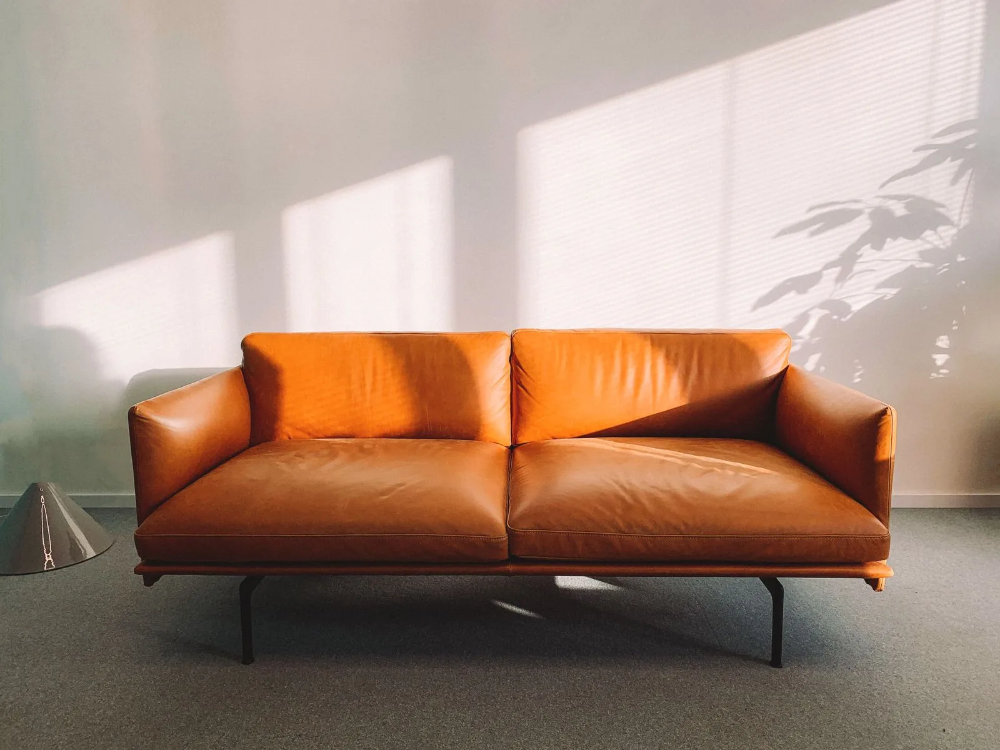
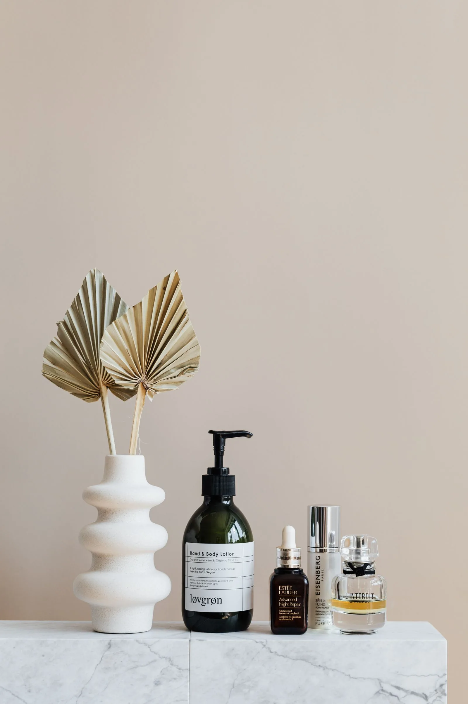

Canapé Horizon
Cuir cognac · 3 places
COLLECTION / 01
Des lignes simples.
Des matières qui prennent vie.

Cuir cognac · 3 places

Céramique · Tons naturels

Une composition à imaginer
L’ESSENTIEL, DANS LA MATIÈRE
Une texture, une courbe, une ombre. Nous aimons les pièces qui trouvent leur place sans tout prendre. Un intérieur se compose au fil du temps.
Faisons connaissance
Essayez ce parcours avec des informations fictives. La demande reste dans votre navigateur ; aucun message n’est envoyé.